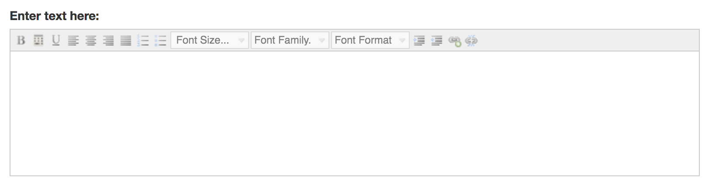

The purpose of this element is to add some instructions to your step. As you can see from the tool bar you can create bold text as well as bulleted or numbered lists You can also add links to other websites.
Lastly you can add calculations to your text by entering a math expression. You can use the following math symbols:
You can enter a positive or negative number or a fraction (2, -2, -2.5). You can also use parentheses to make more complex expressions. Using our input name above we might create:
Suppose your wizard instructs users on how to make a casserole and allows them to decide how much to make. You would ask users, using Ask for Input for the number servings of they want to cook. When you created that user input element you named the result “Servings” (see Ask for Input help). Maybe you need 1/2 cup of noodles per serving so when you list the ingredients you might type:Add Servings*0.5 cups of noodles.
Next select the expression and click the calculate button in the edit control. The Calculate button turns makes expressions appear in italics. Your text will now look like this:
When you look at this step in preview you will only see the result of the calculation. The text will appear when the user enters a number and clicks Save. If the user wants 4 servings then this text will look read “Add 2 cups of noodles.”